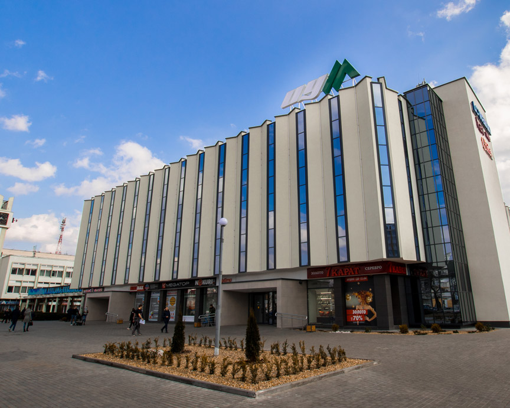

Цум

ОАО «Брестский центральный универмаг» – одно из старейших торговых предприятий областного центра. Открытие Брестского особунивермага было приурочено к 7 ноября 1947 года. В 1958 году универмаг переехал в новое здание по улице Советской (нынешний «Детский мир»). С 1978 года и по сегодняшний день универмаг прописался по адресу: Брест, проспект Машерова, 17. Примечательно, что на месте современного здания универмага издавна бурлила торговая жизнь. Ранее здесь находилась городская площадь, на которой в 1842 г. были построены торговые ряды – одноэтажное, прямоугольное здание в стиле классицизма с большим внутренним двором. По периметру здание делилось на ряд торговых секций – магазинов, имевших входы со стороны главного фасада и внутреннего двора. Здесь находился универмаг в 1958 - 1978 г.г. Торговые ряды были снесены в 1970 г., а на их месте построен внушительный торговый комплекс с центральным универмагом, в котором воплотилось прошлое и современность, а стрелки часов на башне и помыслы людей устремлены в будущее.
Главная
Следующая